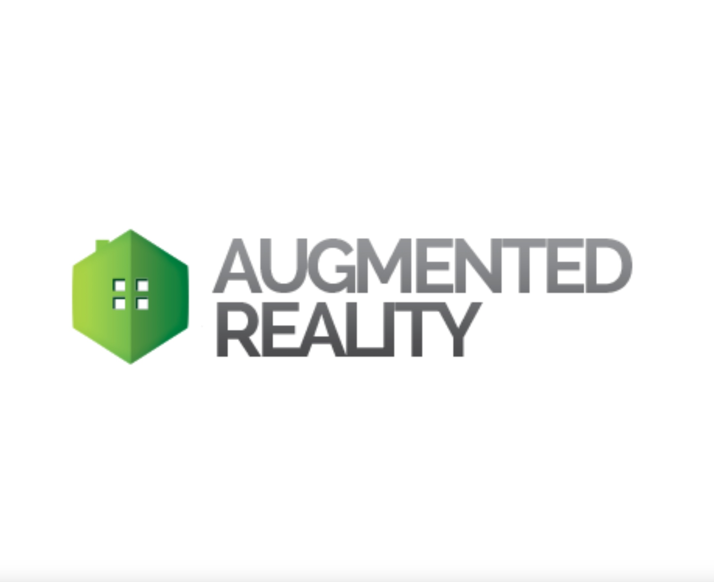

1. Introduction to Augmented Reality
- Overview of Augmented Reality
- Types of AR applications
2. Understanding AR Frameworks
- Introduction to popular AR frameworks (e.g., ARKit for iOS, ARCore for Android)
- Features and capabilities of each framework
3. Setting Up AR Development Environment
- Installing ARKit (for iOS) or ARCore (for Android)
- Configuring emulators or real devices for AR testing
4. Basics of AR App Testing
- Manual testing of AR features
- Understanding user interactions in AR
5. Introduction to AR Automation
- Challenges and considerations in AR automation
- Benefits of automating AR testing
6. Selecting AR Testing Tools
- Overview of tools for automating AR testing
- Choosing the right tool for your project
7. Building a Simple AR Test Scenario
- Creating a basic AR automation script
- Interacting with AR objects in the application
8. Locating and Interacting with AR Elements
- Identifying and interacting with AR elements in the automation script
- Using locators specific to AR components
9. Handling AR Interactions
- Automating AR gestures (e.g., taps, swipes)
- Verifying correct rendering and positioning of AR objects
10. Testing Different AR Environments
- Adapting tests for various lighting conditions
- Simulating different real-world scenarios
11. Performance Testing in AR
- Measuring the performance of AR features
- Identifying and addressing performance bottlenecks
12. Integrating AR Automation into CI/CD Pipelines
- Running AR tests automatically as part of the continuous integration process
- Ensuring stability in automated builds
13. Handling AR Device Sensors
- Automating tests that involve device sensors (e.g., gyroscope, accelerometer)
- Simulating sensor inputs in automated tests
14. Logging and Reporting in AR Automation
- Implementing logging for better debugging
- Generating comprehensive reports for AR tests
15. Best Practices for AR Automation
- Organizing and structuring AR automation code
- Dealing with challenges specific to AR testing
16. Exploratory Testing in AR
- Combining automated testing with manual exploratory testing
- Identifying edge cases and potential issues
17. Security Testing for AR Apps
- Considering security aspects in AR applications
- Testing for potential vulnerabilities
18. Testing AR Across Platforms
- Ensuring consistent behavior across different AR platforms (iOS and Android)
- Handling platform-specific nuances
19. Continuous Learning and Experimentation
- Staying updated with the latest developments in AR automation
- Experimenting with new AR features and functionalities
20. Collaboration with Developers
- Communicating effectively with developers for AR-related issues
- Collaborative problem-solving in AR testing